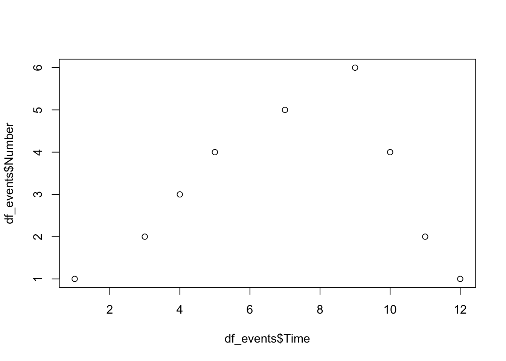

Code
vec1 <- c(1, 2, 3, 4, 5, 6)
vec2 <- c("A", "B", "C", "D", "E", "F")In this practical exercise we are going to play around with the different types of elements in R.
Click on the Code buttons to see the solutions. Please really try before looking at the solution, and ask the instructor if something is not 100% clear.
First, create a new Quarto document for this practical (File -> New File -> Quarto document)
vec1 with values 1 through 6 and one named vec2 with letters A through F. vec1 <- c(1, 2, 3, 4, 5, 6)
vec2 <- c("A", "B", "C", "D", "E", "F")To create a vector we used c(), which stands for ‘concatenation’. It is just a series of numbers or letters.
vec1 and one from vec2. The dimensions for both matrices are 3 rows by 2 columns. mat1 <- matrix(vec1, nrow = 3, ncol = 2)
mat2 <- matrix(vec2, nrow = 3, ncol = 2)To create a matrix we used matrix(). For a matrix we need to specify the dimensions (in this case 3 rows and 2 columns) and the input (in this case vec1 or vec2) needs to match these dimensions.
vec1[1] 1 2 3 4 5 6vec2[1] "A" "B" "C" "D" "E" "F"mat1 [,1] [,2]
[1,] 1 4
[2,] 2 5
[3,] 3 6mat2 [,1] [,2]
[1,] "A" "D"
[2,] "B" "E"
[3,] "C" "F" vec1 and mat1 contain numbers and vec2 and mat2 contain characters.
vec1 and vec2 using cbind. Inspect this matrix using is.matrix().mat3b <- cbind(vec1, vec2)
is.matrix(mat3b)[1] TRUEmat3b vec1 vec2
[1,] "1" "A"
[2,] "2" "B"
[3,] "3" "C"
[4,] "4" "D"
[5,] "5" "E"
[6,] "6" "F" If one or more elements in the matrix represent characters, all other elements are also converted to characters. A matrix is just for either numeric or character elements. Notice that the second approach (the column bind approach from mat3b) returns a matrix where the column names are already set to the name of the bound objects.
To solve the problem of charactered numbers we can create a dataframe. A dataframe is essentially a matrix that allows for character elements. The use of a dataframe is often preferred over the use of a matrix in R, except for purposes where pure numerical calculations are done, such as in matrix algebra. However, most datasets do contain character information and a dataframe would normally be your preferred choice when working with your own collected datasets in R.
dat3 where vec1 and vec2 are both columns. Name the columns V1 and V2, respectively. Use function data.frame().dat3 <- data.frame(V1 = vec1, V2 = vec2)
dat3 V1 V2
1 1 A
2 2 B
3 3 C
4 4 D
5 5 E
6 6 Fdat3 that you have created in Question 4. dat3[3, ] #3rd row V1 V2
3 3 Cdat3[, 2] #2nd column[1] "A" "B" "C" "D" "E" "F"dat3$V2 #also 2nd column[1] "A" "B" "C" "D" "E" "F"dat3[3,2] #intersection[1] "C"The [3,2] index is very useful in ‘R’. The first number (before the comma) represents the row and the second number (after the comma) represents the column. For a vector there are no two dimensions and only one dimension can be called. For example, vec1[3] would yield 3. Try it.
Columns can also be called by the $ sign, but only if a name has been assigned. With dataframes assigning names happens automatically.
Note that R automatically reports the values the character column can take. This means that the column is indeed a factor (a categorical variable - as it is supposed to be). A useful function to inspect the structure of a dataframe is str(). Try running it.
str(dat3)'data.frame': 6 obs. of 2 variables:
$ V1: num 1 2 3 4 5 6
$ V2: chr "A" "B" "C" "D" ...Inspecting the structure of your data is vital, as you probably have imported your data from some other source. If we, at a later stage, start analyzing our data without the correct measurement level, we may run into problems. One problem that often occurs is that categorical variables (factors in R) are not coded as such.
V1 in our dataframe dat3 is not coded correctly. Instead of digits, it should represent information about cities. Convert the variable to a factor and add the labels Utrecht (corresponding to value 1), New York (value 2), London (3), Singapore (4), Rome (5) and Cape Town (6).dat3$V1 <- factor(dat3$V1, labels = c("Utrecht", "New York", "London", "Singapore", "Rome", "Capetown"))
dat3 V1 V2
1 Utrecht A
2 New York B
3 London C
4 Singapore D
5 Rome E
6 Capetown Fdataset_boys.csv.First create a folder “data” in your project. Then download it from here and add it to that folder (use Ctrl+S in the browser to download it).
First you need to load the required library to read the CSV (readr). You may need to install it first.
#install.packages(c("readr"),repos = "http://cran.us.r-project.org")
library(readr)Then you can read the file using the function read_delim() from the readr library
Rows: 748 Columns: 9
── Column specification ────────────────────────────────────────────────────────
Delimiter: ","
chr (3): gen, phb, reg
dbl (6): age, hgt, wgt, bmi, hc, tv
ℹ Use `spec()` to retrieve the full column specification for this data.
ℹ Specify the column types or set `show_col_types = FALSE` to quiet this message.boys <- readr::read_delim("data/dataset_boys.csv", delim=",")head(boys)# A tibble: 6 × 9
age hgt wgt bmi hc gen phb tv reg
<dbl> <dbl> <dbl> <dbl> <dbl> <chr> <chr> <dbl> <chr>
1 0.035 50.1 3.65 14.5 33.7 <NA> <NA> NA south
2 0.038 53.5 3.37 11.8 35 <NA> <NA> NA south
3 0.057 50 3.14 12.6 35.2 <NA> <NA> NA south
4 0.06 54.5 4.27 14.4 36.7 <NA> <NA> NA south
5 0.062 57.5 5.03 15.2 37.3 <NA> <NA> NA south
6 0.068 55.5 4.66 15.1 37 <NA> <NA> NA southAlternatively, you can import datasets directly from the internet by running and loading the connection
#To update
con <- url("https://javier.science/R/Contents/Material/common_datasets/dataset_boys.csv")In the above code we store the connection in object con and then load the connectio.
The boys object will be added to your Global Environment. You can now use the boys data by running
boys <- readr::read_delim(con, delim = ",")Rows: 748 Columns: 9
── Column specification ────────────────────────────────────────────────────────
Delimiter: ","
chr (3): gen, phb, reg
dbl (6): age, hgt, wgt, bmi, hc, tv
ℹ Use `spec()` to retrieve the full column specification for this data.
ℹ Specify the column types or set `show_col_types = FALSE` to quiet this message.Using View() is preferred for inspecting datasets that are large. View() opens the dataset in a spreadsheet-like window (conform MS Excel, or SPSS). If you View() your own datasets, you can not edit the datasets’ contents.
boys data set (use the function dim) and inspect the first and final 6 cases in the data set. To do it numerically, find out what the dimensions of the boys dataset are. Use the function dim()
dim(boys)[1] 748 9There are 748 cases on 9 variables. To select the first and last six cases, use
boys[1:6, ]# A tibble: 6 × 9
age hgt wgt bmi hc gen phb tv reg
<dbl> <dbl> <dbl> <dbl> <dbl> <chr> <chr> <dbl> <chr>
1 0.035 50.1 3.65 14.5 33.7 <NA> <NA> NA south
2 0.038 53.5 3.37 11.8 35 <NA> <NA> NA south
3 0.057 50 3.14 12.6 35.2 <NA> <NA> NA south
4 0.06 54.5 4.27 14.4 36.7 <NA> <NA> NA south
5 0.062 57.5 5.03 15.2 37.3 <NA> <NA> NA south
6 0.068 55.5 4.66 15.1 37 <NA> <NA> NA southboys[743:748, ]# A tibble: 6 × 9
age hgt wgt bmi hc gen phb tv reg
<dbl> <dbl> <dbl> <dbl> <dbl> <chr> <chr> <dbl> <chr>
1 20.4 189. 59.8 16.8 55.2 <NA> <NA> NA west
2 20.4 181. 67.2 20.5 56.6 <NA> <NA> NA north
3 20.8 189. 88 24.6 NA <NA> <NA> NA west
4 20.8 194. 75.4 20.1 NA <NA> <NA> NA west
5 20.8 189 78 21.8 59.9 <NA> <NA> NA north
6 21.2 182. 76.5 23.1 NA <NA> <NA> NA east or, more efficiently:
head(boys)# A tibble: 6 × 9
age hgt wgt bmi hc gen phb tv reg
<dbl> <dbl> <dbl> <dbl> <dbl> <chr> <chr> <dbl> <chr>
1 0.035 50.1 3.65 14.5 33.7 <NA> <NA> NA south
2 0.038 53.5 3.37 11.8 35 <NA> <NA> NA south
3 0.057 50 3.14 12.6 35.2 <NA> <NA> NA south
4 0.06 54.5 4.27 14.4 36.7 <NA> <NA> NA south
5 0.062 57.5 5.03 15.2 37.3 <NA> <NA> NA south
6 0.068 55.5 4.66 15.1 37 <NA> <NA> NA southtail(boys)# A tibble: 6 × 9
age hgt wgt bmi hc gen phb tv reg
<dbl> <dbl> <dbl> <dbl> <dbl> <chr> <chr> <dbl> <chr>
1 20.4 189. 59.8 16.8 55.2 <NA> <NA> NA west
2 20.4 181. 67.2 20.5 56.6 <NA> <NA> NA north
3 20.8 189. 88 24.6 NA <NA> <NA> NA west
4 20.8 194. 75.4 20.1 NA <NA> <NA> NA west
5 20.8 189 78 21.8 59.9 <NA> <NA> NA north
6 21.2 182. 76.5 23.1 NA <NA> <NA> NA east The functions head() and tail() are very useful functions. For example, from looking at both functions we can observe that the data are very likely sorted based on age.
boys dataset with str(). Use one or more functions to find distributional summary information (at least information about the minimum, the maximum, the mean and the median) for all of the variables. Give the standard deviation for age and bmi. Tip: make use of the help (?) and help search (??) functionality in R.str(boys)spc_tbl_ [748 × 9] (S3: spec_tbl_df/tbl_df/tbl/data.frame)
$ age: num [1:748] 0.035 0.038 0.057 0.06 0.062 0.068 0.068 0.071 0.071 0.073 ...
$ hgt: num [1:748] 50.1 53.5 50 54.5 57.5 55.5 52.5 53 55.1 54.5 ...
$ wgt: num [1:748] 3.65 3.37 3.14 4.27 5.03 ...
$ bmi: num [1:748] 14.5 11.8 12.6 14.4 15.2 ...
$ hc : num [1:748] 33.7 35 35.2 36.7 37.3 37 34.9 35.8 36.8 38 ...
$ gen: chr [1:748] NA NA NA NA ...
$ phb: chr [1:748] NA NA NA NA ...
$ tv : num [1:748] NA NA NA NA NA NA NA NA NA NA ...
$ reg: chr [1:748] "south" "south" "south" "south" ...
- attr(*, "spec")=
.. cols(
.. age = col_double(),
.. hgt = col_double(),
.. wgt = col_double(),
.. bmi = col_double(),
.. hc = col_double(),
.. gen = col_character(),
.. phb = col_character(),
.. tv = col_double(),
.. reg = col_character()
.. )
- attr(*, "problems")=<externalptr> summary(boys) #summary info age hgt wgt bmi
Min. : 0.035 Min. : 50.00 Min. : 3.14 Min. :11.77
1st Qu.: 1.581 1st Qu.: 84.88 1st Qu.: 11.70 1st Qu.:15.90
Median :10.505 Median :147.30 Median : 34.65 Median :17.45
Mean : 9.159 Mean :132.15 Mean : 37.15 Mean :18.07
3rd Qu.:15.267 3rd Qu.:175.22 3rd Qu.: 59.58 3rd Qu.:19.53
Max. :21.177 Max. :198.00 Max. :117.40 Max. :31.74
NA's :20 NA's :4 NA's :21
hc gen phb tv
Min. :33.70 Length:748 Length:748 Min. : 1.00
1st Qu.:48.12 Class :character Class :character 1st Qu.: 4.00
Median :53.00 Mode :character Mode :character Median :12.00
Mean :51.51 Mean :11.89
3rd Qu.:56.00 3rd Qu.:20.00
Max. :65.00 Max. :25.00
NA's :46 NA's :522
reg
Length:748
Class :character
Mode :character
sd(boys$age) #standard deviation for age[1] 6.894052sd(boys$bmi, na.rm = TRUE) #standard deviation for bmi[1] 3.053421Note that bmi contains 21 missing values, e.g. by looking at the summary information. Therefor we need to use na.rm = T to calculate the standard deviation on the observed cases only.
The logical operators (TRUE vs FALSE) are a very powerful tool in R. For example, we can just select the rows (respondents) in the data that are older than 20 by putting the logical operater within the row index of the dataset:
boys2 <- boys[(boys$age >= 20), ]
nrow(boys2)[1] 12or, alternatively (the tidy way),
library(dplyr) #Library to filter
Attaching package: 'dplyr'The following objects are masked from 'package:stats':
filter, lagThe following objects are masked from 'package:base':
intersect, setdiff, setequal, unionboys2 <- dplyr::filter(boys, age >= 20)
nrow(boys2)[1] 12boys3 <- boys[(boys$age > 19) & (boys$age < 19.5), ]
nrow(boys3)[1] 18or, alternatively,
boys3 <- dplyr::filter(boys, age > 19, age < 19.5)
nrow(boys3)[1] 18north?age_subset <- boys[(boys$age < 15) & (boys$reg != "north"), ]$age
mean(age_subset, na.rm = TRUE)[1] 6.044461or, alternatively,
age_subset <- dplyr::filter(boys, (age < 15), (reg != "north"))$age
mean(age_subset, na.rm=TRUE)[1] 6.044461The mean age is 6.0444609 years
Download the file example_csv.csv from here and add it to your data folder.
Open the file in your text editor to see how it looks. What is the first line?
read_delim() function to skip the first line. Make sure it looks fine by printing the head.Rows: 9 Columns: 2
── Column specification ────────────────────────────────────────────────────────
Delimiter: "\t"
dbl (2): Time, Number
ℹ Use `spec()` to retrieve the full column specification for this data.
ℹ Specify the column types or set `show_col_types = FALSE` to quiet this message.df_events <- readr::read_delim("data/example_csv.csv", skip = 1)
head(df_events)head(df_events)# A tibble: 6 × 2
Time Number
<dbl> <dbl>
1 1 1
2 3 2
3 4 3
4 5 4
5 7 5
6 9 6summary(df_events) Time Number
Min. : 1.000 Min. :1.000
1st Qu.: 4.000 1st Qu.:2.000
Median : 7.000 Median :3.000
Mean : 6.889 Mean :3.111
3rd Qu.:10.000 3rd Qu.:4.000
Max. :12.000 Max. :6.000 plot (you’ll learn a better way to plot with Gerko)plot(df_events$Time, df_events$Number)
Today we have learned to use R at its basics. This offers tremendous flexibility, but may also be inefficient when our aim is some complex analysis, data operation of data manipulation. Doing advanced operations in basic R may require lots and lots of code. Next you will learn how to use R efficiently.
As you start using R in your own research, you will find yourself in need of packages that are not part of the default R installation. The beauty of R is that its functionality is community-driven. People can add packages to CRAN that other people can use and improve. Chances are that a function and/or package has been already developed for the analysis or operation you plan to carry out. If not, you are of course welcome to fill the gap by submitting your own package.
End of practical